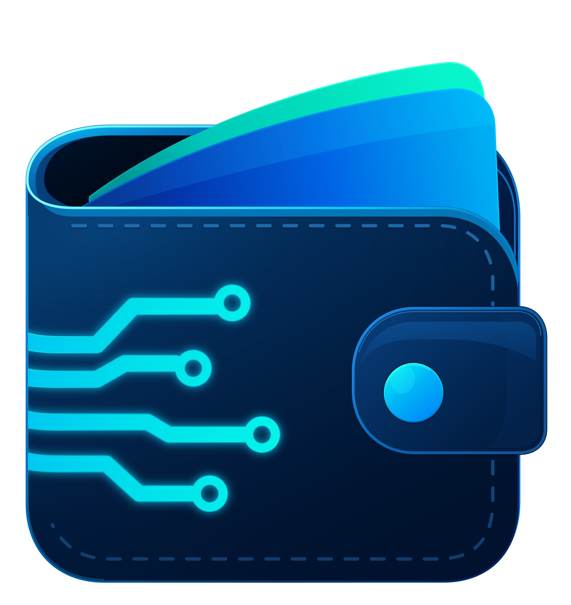

Local by choice
Signing in does not automatically upload your saved items.

DwalletLast updated:
This policy explains how Dwallet handles information in the Android app and on its account-deletion website. You can use a local vault without creating a Dwallet account.
Signing in does not automatically upload your saved items.
Backups are encrypted, with keys managed by the account service.
Only the content you select is sent for cloud extraction after consent.
Your vault can contain saved sign-ins, payment-card details, notes, images, handwriting, links, folders and groups. Sensitive vault fields are encrypted on the device. Some display and search metadata, such as item labels and saved email addresses, is stored locally. Profile images and layout preferences are also stored locally for the selected vault.
Accounts and local vaults are kept separate. Moving a local vault into an account requires your choice. Signing out hides the account vault without deleting its local cache. Local file exports are encrypted with the password you choose; keep that password because an unreadable export cannot be recovered without it.
If you create an account, Supabase provides Dwallet’s authentication and database services. It processes your email address, account identifier, authentication information and service connection data to create, secure and manage your account. With Google sign-in, Google supplies the account information you authorize, such as your email and basic profile. Dwallet does not receive your Google password.
When you choose cloud backup, a snapshot of the selected account vault is encrypted and sent to Dwallet’s Supabase service. It includes saved items, their organization and saved app associations. The service stores the encrypted snapshot and backup metadata, such as its size and update time. It can retain the current and previous backup so that you can restore an earlier copy.
Cloud backup keys are managed by the account service. Authorized server infrastructure can access those keys; cloud backups are not end-to-end encrypted. Local-only vault contents are not uploaded merely because you sign in.
Cloud extraction sends your selected text, or text recognized locally from your selected image, through Dwallet’s authenticated server to the configured AI provider: Groq and/or Google Gemini. That content can include passwords, email addresses, note text or payment-card details. Original images and unrelated vault or form contents are not included in this extraction request.
You approve cloud extraction before sending. If you explicitly select “Do not show this warning again” and confirm, later extraction requests can use that remembered choice. Cancelling does not send a new request. Already transmitted information cannot be recalled by cancelling afterward. Dwallet’s extraction handler does not deliberately store or log the selected text or returned result, but provider and infrastructure processing follow their applicable terms; this is not a promise of zero retention.
Android Autofill and the credential chooser use supported field information to offer saved items. Filling protected values requires the configured vault authentication. After you choose an item, the optional Accessibility helper can inspect visible fields and supported screen content, perform supported gestures and complete multi-step filling. It does not submit sign-in or payment forms.
In supported payment screens, the Accessibility helper can temporarily capture screen images and recognize text on the device to identify fields or date-picker controls. These helper images are not saved or uploaded by Dwallet. You can disable the helper in Android Accessibility settings.
Camera or a system photo picker is used when you choose an image. NFC is used when you request supported card scanning. Overlay access can show Dwallet suggestions over other apps. Notifications and background settings support the helper’s visible operation. Clipboard access is used for your explicit copy actions; automatic clearing is best effort and depends on Android restrictions. You control these optional permissions in the app and Android settings.
The app uses Google ML Kit for on-device text recognition. ML Kit does not send recognition inputs or outputs to Google, but its SDK can send device and app information, installation identifiers, performance metrics, feature events and error codes for diagnostics and usage analytics. This SDK activity is separate from your vault contents.
Dwallet’s server keeps content-free request counts and temporary coordination data to apply AI limits and protect the service. Authentication and hosting providers can process connection, security and operational information, including IP addresses. This version does not upload a product-analytics inventory of your saved apps, card brands or vault-item counts, and it does not include an advertising SDK.
Local items remain until you delete them or erase that local vault. Cloud account information and current/previous backups remain while needed for your account, until replaced or deleted. Account-linked AI request counters are removed on account deletion; older daily counters are cleaned up when later requests run. Hosting, authentication and AI providers may retain their own operational records under their terms. Dwallet does not promise an independently verified fixed retention period for those provider records.
To recognize deletion after a device’s sign-in stops working, the device registers a random proof. The server stores its hash. Once the account is deleted, the receipt keeps a deletion timestamp with the account identifier removed. This opaque receipt record currently has no automatic expiry, so an offline device can later learn that deletion occurred. It contains no email address or vault content.
You can request account deletion from your Dwallet account page or the account-deletion website. A confirmed deletion removes the Dwallet account, its cloud backups and account-linked service data. In the app, choose whether to keep this account’s items as a separate local vault or also erase that device’s copy. Other vaults are preserved.
After website deletion, open Dwallet on each device and connect to the internet. Devices that registered a proof can verify deletion and ask you to keep or erase their local copy. An offline device cannot be erased remotely through this website. An unknown proof or a connection failure does not authorize local erasure. Files you previously exported or shared outside Dwallet are not deleted by account deletion.
You can edit or delete saved items, export your vault, decline cloud or AI features, and disable optional permissions. Depending on where you live, you may have additional privacy rights. Contact Dwallet to request access, correction or deletion of account information; ownership verification may be needed.
This website is hosted by GitHub Pages. It uses temporary browser-session storage for Google verification state and removes returned sign-in information from the address bar. Sign-in information is used to verify ownership and carry out your requested account deletion, not to create a new account. Dwallet does not add advertising trackers to this page.
Providers involved in these features have their own terms and privacy information:
For privacy questions or account-data requests, contact Dwallet at:
Do not send your vault PIN, passwords, full card number, security codes or backup-file password with a support request.
We will update this page when the service’s data practices change and show the new date above. Material changes to optional AI disclosure require renewed consent in the app.